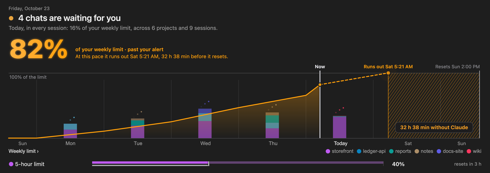
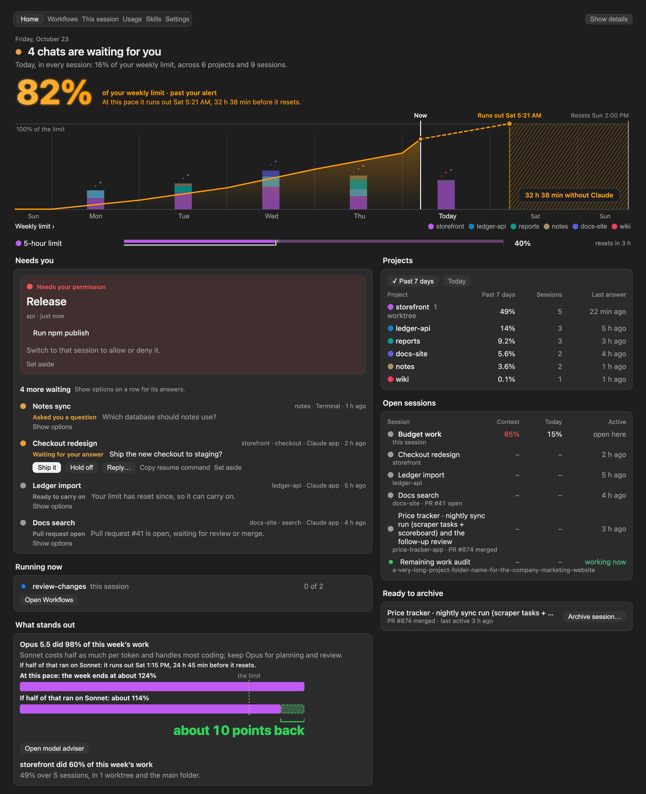
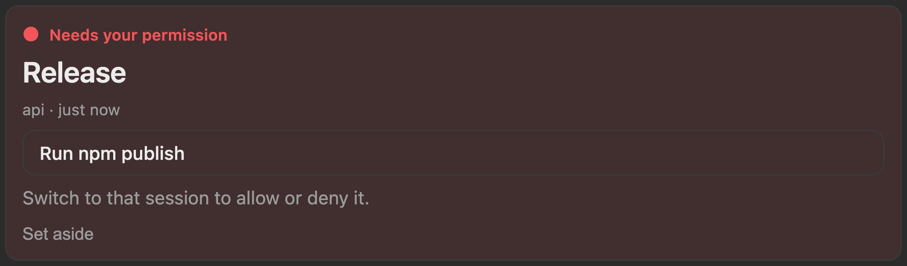
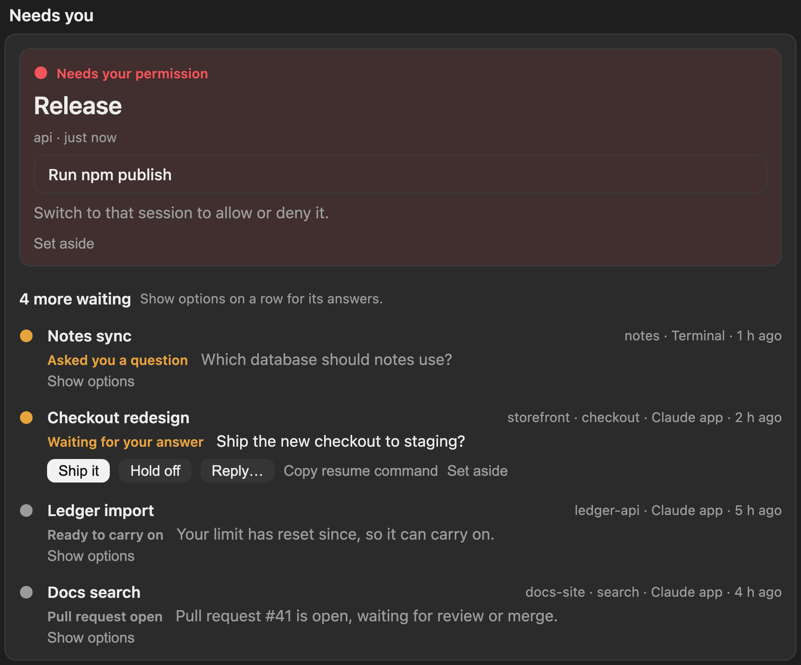
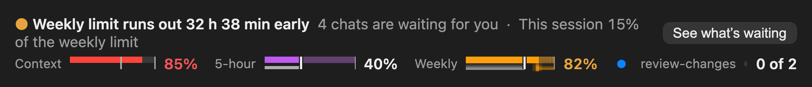
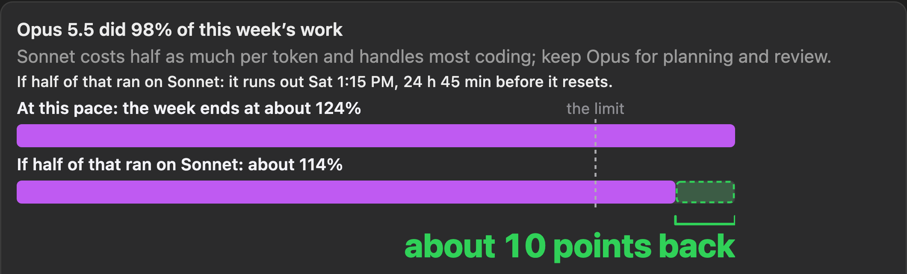
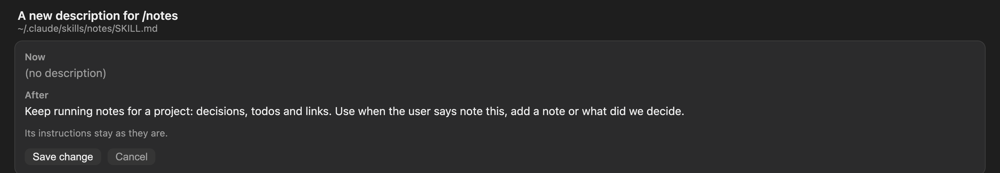

A free mod for Claude Code
See where your week went.
ToBeBestMe draws your Claude Code week as one picture: each day by project, the pace you’re on, and whether you’ll make it to the reset. The chat that needs you most sits right beside it. Press a day or a project below.
/plugin install tobebestme --marketplace vradulthub-cloud/tobebestmePaste it at a Claude Code prompt. Needs Claude Code 2.1.308 or later.
32 h 38 min without Claude before it resets, Sun 2:00 PM.
Shares of the weekly limit are estimates at list prices, from Claude Code’s records on your computer.
The tour
The whole idea in 88 seconds.
The week as one drawing, the forecast and the stretch without Claude, the chat that needs you, the line above the prompt, savings and fixes made in the pane, and how to install, with captions.
Your limits
Know before you run out.
Every limit shows where your pace lands by the reset, and when it would run out if that’s early, with the hours you’d be without Claude drawn as a hatched stretch. You find out days ahead, while there’s still time to change course.
At this pace it runs out Sat 5:21 AM, 32 h 38 min before it resets.
Your recent pace is how fast the limit has been going down lately. The forecast assumes you keep it up.
Home
The whole week, in one drawing.
Open it with /tobebestme. Home leads with the week: the figure, each day’s work by project, the line of use so far, and a dashed line to where your pace runs out. It reads every project and session on this computer.


Needs you
The chat that needs you most, first.
Run five sessions and one of them is always stuck on you. The most urgent is a card of its own, Now. The rest follow as a compact list, with the reply buttons the chat offered.
- Needs your permission. A running session stopped on a prompt. Release, here, leads as the Now card.
- Waiting for your answer. A question or a choice of options, like Notes sync and Checkout redesign.
- Ready to carry on. A limit that has since reset (Ledger import), or a pull request waiting for review (Docs search).

The whole section: the Now card, then four more waiting, three of them with a question or a choice.

Above the prompt
One line, always in view.
The headline and its cost on one line, then context, the 5-hour limit, the weekly limit and what’s running, each as a small runway whose ghost shows where your pace lands. A limit turns amber when it runs low and red when it’s nearly gone, so you never have to open anything to know.

What stands out
Know what a change would save.
It sees which models did the week’s work and what that did to your limit. Then it draws the week as you ran it against the week with the idea applied, and says how many points it would give back, before you make the change.
Two figures for storefront: it used 49% of the limit, which is 60% of the week’s work (47 of the 82% used so far). Estimates include helpers and workflow agents.

Fixes
Fix it in the pane, not in the chat.
Fix description…, Make skills manual-only…, Make it a rule… used to hand Claude a request. Now the pane works out the change itself, shows what’s there now and what it becomes after, and writes the file only when you press Save change. A file you edited meanwhile is never written over.

Made to stay out of your way.
Terminal and app
The same pane and line in the terminal and the Claude desktop app, at any width from a phone-sized split to a wide screen.
Every project at once
It reads every session on this computer, including ones that never ran the mod, so nothing waits unseen.
Workflows you can follow
See each workflow Claude runs, its agents and what it has cost so far, and step in when one needs you.
Keyboard first
Number keys switch tabs. Every control works from the keyboard, with a visible focus and screen-reader labels. Drawings play once and stop entirely under reduced motion.
Tested where it draws
91 behaviour tests, plus 153 rendering checks at four pane widths for overflow, contrast and text size.
Open and checkable
MIT licensed, with SHA-256 checksums for every release file and a daily check that warns if installed files change.
Privacy
What it reads, and what it sends.
It runs inside Claude Code on your computer, with the permissions Claude Code gives a mod. Settings in the mod shows every source and whether it could be read.
It reads
- Claude Code’s records in ~/.claude/projects, for usage, costs and waiting chats.
- Session lists from Claude Code and the Claude app, for what’s working or waiting.
- git status in recent sessions’ folders, for work left uncommitted.
- Your skill files and two skill settings, for the skills check-up.
It sends
- Prompts to Claude through your own account: when you press a button that says so (Fix description… sends the skill’s text to the helper model), a five-token check when the cheaper model came back empty, a handoff note before compaction, and lines added to a prompt when limits run tight (or a pointer to the handoff note after compaction).
- A notification’s title and text to the web address you set, only if you set one up.
- Locally, it also shows system notifications by running
osascriptornotify-send. Apart from the prompts above, nothing from your transcripts leaves your computer.
It never opens .env or key files. The full list, with every file it writes, is in SECURITY.md.
Install
Running in a minute.
It installs for your user, so it runs in every project and every session.
Check your version
You need Claude Code 2.1.308 or later. Run
claude updateif you’re behind.claude --versionInstall the mod
At a Claude Code prompt:
/plugin install tobebestme --marketplace vradulthub-cloud/tobebestmeOpen it
Quit and reopen the Claude app, or start a new terminal session. Then type
/tobebestme. The first time, it reads your last 14 days.
Questions
Is this made by Anthropic?
No. ToBeBestMe is an independent open-source project. It uses the mod interface Claude Code provides, and nothing else.
Which plans does it work with?
On a Claude plan it shows the 5-hour and weekly limits. On an API key or team billing it shows what each request costs. Context size shows for everyone.
Does it cost anything?
No. It’s free and MIT licensed. The few buttons that ask Claude something run through your own account and say so on the button.
Does it send my transcripts anywhere?
No, not on its own. The one way text from your chats can leave is inside a prompt to Claude through your own account, such as a handoff note Claude writes before compaction. If you set a notification address, a notification’s title and text go there too. Everything else stays on your computer. The full list is in SECURITY.md.
Does it change my files or settings?
Only when you press Save change, on a preview that shows what’s there now and what it becomes: a skill’s description, a skill setting, or a rule in your CLAUDE.md. Otherwise it writes only its own store, the reports you save, and a handoff note in the project.
Where do the forecasts come from?
From the limits Claude Code reports and how fast you’ve been using them. The mod labels an estimate wherever it shows one.